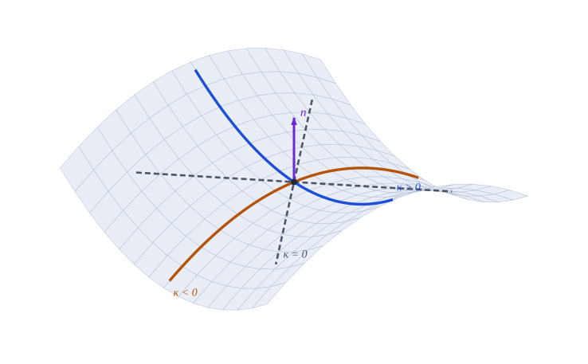
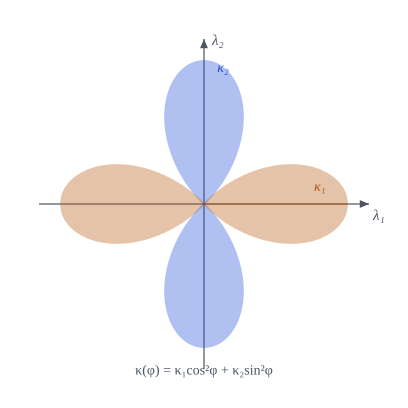

10 Curvaturas de una superficie
Curvatura normal, direcciones principales, Gauss y media; elementos de área y volumen

Cuánto se curva una superficie en cada dirección, cuáles son las direcciones extremas y qué dos números bastan para resumirlo
Objetivos y prerrequisitos
Objetivos. Al terminar el tema sabrás:
- definir la curvatura normal en una dirección y calcularla con \(b_{\alpha\beta}\);
- obtener las curvaturas y direcciones principales como problema de autovalores y demostrar su ortogonalidad;
- definir las curvaturas de Gauss \(K\) y media \(H\) y clasificar los puntos de una superficie;
- demostrar la fórmula de Euler \(\kappa(\varphi)=\kappa_1\cos^2\varphi+\kappa_2\sin^2\varphi\);
- expresar la base de la lámina y los diferenciales de área y volumen con \(H\) y \(K\).
Prerrequisitos. Formas fundamentales y fórmulas de Gauss–Weingarten.
Secciones del tema
- Sección 10.1 · Motivación · Sección 10.2 · Curvatura normal
- Sección 10.3 · Curvaturas y direcciones principales · Sección 10.4 · Laboratorio
- Sección 10.5 · La lámina y los diferenciales de área y volumen · Sección 10.6 · Práctica guiada
10.1 Motivación
El tensor \(b_{\alpha\beta}\) guarda toda la información de curvatura, pero son cuatro números que dependen de las coordenadas. Lo que interesa en mecánica es cuánto se curva la superficie en cada dirección y cuáles son las direcciones extremas. Eso se resume en dos números invariantes: \(K\) y \(H\).
ImportanteIdea clave
Si se corta la superficie con un plano que contiene a la normal, se obtiene una curva plana (una sección normal). Su curvatura, con signo, es la curvatura normal en esa dirección. Sus valores máximo y mínimo son las curvaturas principales.
10.2 Curvatura normal
Sea \(\hat{\boldsymbol\lambda}=\lambda^\alpha\mathbf{a}_\alpha\) un vector tangente unitario (\(a_{\alpha\beta}\lambda^\alpha\lambda^\beta=1\)), tangente a una curva de la superficie de longitud de arco \(\ell\).
Definición 10.1 (Curvatura normal) \[ \kappa=\hat{\mathbf{a}}_3\cdot\frac{d\hat{\boldsymbol\lambda}}{d\ell}=-\frac{d\hat{\mathbf{a}}_3}{d\ell}\cdot\hat{\boldsymbol\lambda} . \tag{10.1}\]
Proposición 10.1 (Curvatura normal y segunda forma) \[ \kappa=b_{\alpha\beta}\,\lambda^\alpha\lambda^\beta . \tag{10.2}\] Si \(\boldsymbol\lambda\) no es unitario, \(\kappa=\dfrac{b_{\alpha\beta}\lambda^\alpha\lambda^\beta}{a_{\alpha\beta}\lambda^\alpha\lambda^\beta}\). Solo depende de la dirección, no de la curva elegida.
NotaDemostración de Proposición 10.1
Con \(\hat{\boldsymbol\lambda}=\lambda^\alpha\mathbf{a}_\alpha\) y \(d\theta^\beta/d\ell=\lambda^\beta\), \(\dfrac{d\hat{\boldsymbol\lambda}}{d\ell}=\lambda^\alpha_{,\beta}\lambda^\beta\mathbf{a}_\alpha+\lambda^\alpha\lambda^\beta\mathbf{a}_{\alpha,\beta}\). Su producto con \(\hat{\mathbf{a}}_3\) elimina el primer término (\(\hat{\mathbf{a}}_3\perp\mathbf{a}_\alpha\)) y deja \(\lambda^\alpha\lambda^\beta\,\hat{\mathbf{a}}_3\cdot\mathbf{a}_{\alpha,\beta}=b_{\alpha\beta}\lambda^\alpha\lambda^\beta\) por ecuación 9.2. \(\blacksquare\)
Con la normal hacia arriba y el convenio del Sección 9.2.1, \(\kappa>0\) si la curva se dobla hacia \(\hat{\mathbf{a}}_3\) y \(\kappa<0\) si se aleja. La Figura 10.1 lo muestra en un punto de silla.
10.2.1 Torsión y curvatura geodésica
Sobre una curva con tangente \(\hat{\boldsymbol\lambda}_1\) se forma el triedro \(\{\hat{\boldsymbol\lambda}_1,\hat{\boldsymbol\lambda}_2=\hat{\mathbf{a}}_3\times\hat{\boldsymbol\lambda}_1,\hat{\mathbf{a}}_3\}\). Al avanzar, \(\hat{\boldsymbol\lambda}_1\) gira hacia \(\hat{\mathbf{a}}_3\) (curvatura normal \(\kappa_{11}\)) y hacia \(\hat{\boldsymbol\lambda}_2\) (curvatura geodésica \(\sigma_{12}=\hat{\boldsymbol\lambda}_2\cdot d\hat{\boldsymbol\lambda}_1/d\ell\)). Por su parte, \(\hat{\boldsymbol\lambda}_2\) gira sobre \(\hat{\mathbf{a}}_3\) con la torsión \(\tau_{12}=\hat{\mathbf{a}}_3\cdot d\hat{\boldsymbol\lambda}_2/d\ell=b_{\alpha\beta}\lambda_1^\alpha\lambda_2^\beta\). En las direcciones principales (siguiente sección) la torsión se anula.
10.3 Curvaturas y direcciones principales
Los extremos de \(\kappa(\boldsymbol\lambda)\) sujetos a \(a_{\alpha\beta}\lambda^\alpha\lambda^\beta=1\) cumplen, por multiplicadores de Lagrange, \[ \bigl(b_{\alpha\beta}-\kappa\,a_{\alpha\beta}\bigr)\lambda^\alpha=0 . \tag{10.3}\]
Proposición 10.2 (Curvaturas principales, Gauss y media) Sean \(\kappa_1,\kappa_2\) las raíces de \(\det(b_{\alpha\beta}-\kappa a_{\alpha\beta})=0\). Entonces:
- \(\kappa^2-2H\kappa+K=0\), con \[ H=\tfrac12\,b^\alpha_\alpha=\tfrac12(\kappa_1+\kappa_2),\qquad K=\det\bigl(b^\alpha_\beta\bigr)=\frac{\det(b_{\alpha\beta})}{a}=\kappa_1\kappa_2 . \tag{10.4}\]
- Las raíces son reales. Si \(\kappa_1\neq\kappa_2\), las direcciones principales son ortogonales: \(a_{\alpha\beta}\lambda_1^\alpha\lambda_2^\beta=0\).
- En una dirección principal, la torsión es nula.
NotaDemostración de Proposición 10.2
El sistema ecuación 10.3 equivale a \((b^\alpha_\beta-\kappa\delta^\alpha_\beta)\lambda^\beta=0\), luego \(\kappa\) es autovalor de \((b^\alpha_\beta)\) y \(\det(b^\alpha_\beta-\kappa\delta)=\kappa^2-(\operatorname{tr}b)\kappa+\det b^\alpha_\beta\). Los términos son \(2H\) y \(K\). Además \(\det(b^\alpha_\beta)=\det(a^{\alpha\gamma})\det(b_{\gamma\beta})=\det b_{\gamma\beta}/a\).
\(a^{-1}b\) es simétrica respecto del producto interno \(a\): la forma \(\langle\mathbf{x},\mathbf{y}\rangle_a=x^{\mathsf T}ay\) da \(\langle b^\cdot_\cdot x,y\rangle_a=x^{\mathsf T}b\,y=\langle x,b^\cdot_\cdot y\rangle_a\). Los autovalores de un operador autoadjunto en un espacio con producto interno son reales y sus autovectores de autovalores distintos, ortogonales. Explícitamente, multiplicando ecuación 10.3 para \(\kappa_1\) por \(\lambda_2^\beta\) y para \(\kappa_2\) por \(\lambda_1^\beta\) y restando, se tiene \((\kappa_1-\kappa_2)\,a_{\alpha\beta}\lambda_1^\alpha\lambda_2^\beta=0\) por la simetría de \(a_{\alpha\beta}\) y \(b_{\alpha\beta}\).
\(\tau_{12}=b_{\alpha\beta}\lambda_1^\alpha\lambda_2^\beta=\kappa_1\,a_{\alpha\beta}\lambda_1^\alpha\lambda_2^\beta=0\) por (2). \(\blacksquare\)
Proposición 10.3 (Fórmula de Euler) Si \(\varphi\) es el ángulo entre \(\hat{\boldsymbol\lambda}\) y la primera dirección principal, \[ \kappa(\varphi)=\kappa_1\cos^2\varphi+\kappa_2\sin^2\varphi . \tag{10.5}\]
NotaDemostración de Proposición 10.3
Como las direcciones principales \(\hat{\boldsymbol\lambda}_1,\hat{\boldsymbol\lambda}_2\) son ortonormales y tangentes, \(\hat{\boldsymbol\lambda}=\cos\varphi\,\hat{\boldsymbol\lambda}_1+\sin\varphi\,\hat{\boldsymbol\lambda}_2\), es decir, \(\lambda^\alpha=\cos\varphi\,\lambda_1^\alpha+\sin\varphi\,\lambda_2^\alpha\). Sustituyendo en ecuación 10.2 y usando \(b_{\alpha\beta}\lambda_1^\alpha\lambda_1^\beta=\kappa_1\), \(b_{\alpha\beta}\lambda_2^\alpha\lambda_2^\beta=\kappa_2\), \(b_{\alpha\beta}\lambda_1^\alpha\lambda_2^\beta=0\), queda ecuación 10.5. \(\blacksquare\)

TipClasificación de los puntos
| Signo de \(K\) | Tipo de punto | Ejemplos |
|---|---|---|
| \(K>0\) | elíptico: \(\kappa_1,\kappa_2\) del mismo signo | esfera, cúpula |
| \(K<0\) | hiperbólico: signos opuestos (silla) | paraboloide hiperbólico |
| \(K=0\), \(H\neq0\) | parabólico: una curvatura principal nula | cilindro, cono |
| \(K=H=0\) | plano | plano |
| \(\kappa_1=\kappa_2\) | umbilical: \(\kappa\) no depende de la dirección | esfera |
\(K\) no cambia al invertir la normal; \(H\) sí.
Ejemplo 10.1 (Ejemplo resuelto: curvaturas del cilindro y de la esfera) Cilindro de radio \(R\) (normal saliente): \(b_{\alpha\beta}=\operatorname{diag}(-R,0)\) y \(a_{\alpha\beta}=\operatorname{diag}(R^2,1)\), luego \(b^\alpha_\beta=\operatorname{diag}(-1/R,0)\). Las curvaturas principales son \(\kappa_1=-1/R\) (dirección \(\theta^1\), la circunferencia) y \(\kappa_2=0\) (la generatriz, una recta). Entonces \(K=\kappa_1\kappa_2=0\) y \(H=-\dfrac1{2R}\). Por Euler, en una dirección a \(\varphi=45^\circ\) de la circunferencia, con \(R=2\), \[ \kappa(45^\circ)=\kappa_1\cos^245^\circ+\kappa_2\sin^245^\circ=-\tfrac12\cdot\tfrac12=-0{,}25 . \] Esfera de radio \(R\) (normal saliente): \(b_{\alpha\beta}=-a_{\alpha\beta}/R\), luego \(b^\alpha_\beta=-\delta^\alpha_\beta/R\) y las dos curvaturas principales valen \(-1/R\) en todas las direcciones (punto umbilical): \(K=1/R^2\) y \(H=-1/R\). Con \(R=2\): \(K=0{,}25\) y \(H=-0{,}5\).
Pon a prueba lo anterior. Los ejercicios se corrigen en tu navegador y no envían nada a ningún sitio.
En un cilindro de radio \(R=2\) con normal saliente, ¿cuánto vale la curvatura normal en una dirección a \(45^\circ\) de la circunferencia?
\(\kappa=\kappa_1\cos^245^\circ=-\tfrac12\cdot\tfrac12=-0{,}25\).
¿Cuánto vale la curvatura de Gauss \(K\) de una esfera de radio \(R=2\)?
\(K=1/R^2=0{,}25\).
En el punto de silla de un paraboloide hiperbólico, ¿qué signo tiene \(K\)?
- Positivo
- Negativo
- Cero
- Depende de la normal elegida
Negativo: las curvaturas principales tienen signos opuestos. \(K\) no depende de la normal (el producto \(\kappa_1\kappa_2\) no cambia al invertirla); \(H\) sí.
10.4 Laboratorio interactivo
Laboratorio · Curvatura normal y fórmula de Euler
calculado en el navegador Verificado frente a Julia (web/tests/laboratorios.test.mjs).
Fija una base ortonormal (\(a_{\alpha\beta}=\delta_{\alpha\beta}\)) y elige las componentes de \(b_{\alpha\beta}\). Qué observar:
- Con \(b_{12}=0\) las direcciones principales son los ejes y \(\kappa_{1,2}=b_{11},b_{22}\).
- Los lóbulos azules son direcciones de curvatura positiva y los naranjas, negativa: cuando \(K<0\) (silla) hay de los dos colores; cuando \(K>0\) todos los lóbulos tienen el mismo color.
- Si \(b_{11}b_{22}=b_{12}^2\) (\(K=0\)) aparece una dirección de curvatura nula (cilindro, cono).
- Cambia el signo de las tres componentes (invertir la normal): \(K\) no cambia y \(H\) cambia de signo.
10.5 La base de la lámina y los diferenciales de área y volumen
Con \(\mathbf{r}={}_0\mathbf{r}+\theta^3\hat{\mathbf{a}}_3\) (ecuación 8.1), derivando respecto de \(\theta^\alpha\) y usando Weingarten (ecuación 9.4):
\[ \mathbf{g}_\alpha=\mathbf{a}_\alpha+\theta^3\,\hat{\mathbf{a}}_{3,\alpha}=\mathbf{a}_\alpha-\theta^3\,b^\beta_\alpha\,\mathbf{a}_\beta,\qquad\mathbf{g}_3=\hat{\mathbf{a}}_3 . \tag{10.6}\]
Proposición 10.4 (Métrica y volumen de la lámina) \[ \begin{aligned} g_{\alpha\beta}&=a_{\alpha\beta}-2\theta^3\,b_{\alpha\beta}+(\theta^3)^2\,b_{\alpha\gamma}b^\gamma_\beta,\qquad g_{\alpha3}=0,\ g_{33}=1,\\ \sqrt{g}&=\sqrt{a}\,\bigl[\,1-2H\,\theta^3+K\,(\theta^3)^2\bigr] . \end{aligned} \tag{10.7}\] Por tanto, \[ dA=\sqrt{g}\,d\theta^1d\theta^2,\qquad d\upsilon=\sqrt{g}\,d\theta^1d\theta^2d\theta^3,\qquad \frac{\sqrt g}{\sqrt a}=1-2H\theta^3+K(\theta^3)^2 . \tag{10.8}\]
NotaDemostración de Proposición 10.4
De ecuación 10.6, \(g_{\alpha\beta}=\mathbf{g}_\alpha\cdot\mathbf{g}_\beta=a_{\alpha\beta}-\theta^3(b_\alpha^\gamma a_{\gamma\beta}+b_\beta^\gamma a_{\alpha\gamma})+(\theta^3)^2b^\gamma_\alpha b^\delta_\beta a_{\gamma\delta}\). Como \(b^\gamma_\alpha a_{\gamma\beta}=b_{\alpha\beta}\) y \(b_\beta^\gamma a_{\alpha\gamma}=b_{\alpha\beta}\), resulta la primera fórmula. Para el determinante: \(\mathbf{g}_\alpha=\mathbf{a}_\beta\,(\delta^\beta_\alpha-\theta^3b^\beta_\alpha)\) implica \(\mathbf{g}_1\times\mathbf{g}_2=\det(\delta-\theta^3b^\cdot_\cdot)\,\mathbf{a}_1\times\mathbf{a}_2\). Con \(\det(\delta-\theta^3B)=1-\theta^3\operatorname{tr}B+(\theta^3)^2\det B\) y ecuación 10.4, \(\sqrt{g}=\mathbf{g}_3\cdot(\mathbf{g}_1\times\mathbf{g}_2)=\sqrt{a}\,(1-2H\theta^3+K(\theta^3)^2)\). \(\blacksquare\)
ImportanteConsecuencia para láminas
Una lámina de espesor \(h\) tiene \(\theta^3\in[-h/2,h/2]\). El cociente \(\sqrt g/\sqrt a\) solo es \(\approx1\) si \(|H|h\ll1\) y \(|K|h^2\ll1\): es la hipótesis de lámina delgada. Si no, los elementos de área y volumen difieren apreciablemente entre las caras.
10.6 Ejemplo computacional en Julia
TipEjemplo computacional
calculado Curvaturas del paraboloide hiperbólico (\(R_x=3\), \(R_y=-2\)) en \(\theta=(0{,}7,-0{,}4)\); fórmula de Euler; y \(\sqrt g/\sqrt a\) en una esfera con normal saliente, donde debe valer \((1+\theta^3/\rho)^2\).
using Geometria, LinearAlgebra
Rx, Ry = 3.0, -2.0
θ = [0.7, -0.4]
r = paraboloide_curvo(Rx, Ry)
A = base_superficie(r, θ); a = metrica(A); b = segunda_forma(r, θ)
pc = curvaturas_principales(a, b)
w2 = 1 + (θ[1]/Rx)^2 + (θ[2]/Ry)^2
(κ_principales = pc.κ, K = pc.K, K_analítica = 1 / (Rx * Ry * w2^2), H = pc.H,
ortogonales = round(pc.λ[:, 1]' * a * pc.λ[:, 2]; digits = 10),
κ1κ2_igual_K = pc.κ[1] * pc.κ[2] ≈ pc.K)(κ_principales = [-0.30241311065905063, 0.4601089629566834], K = -0.1391429827298405, K_analítica = -0.13914298229792055, H = 0.07884792614881644, ortogonales = 0.0, κ1κ2_igual_K = true)# Fórmula de Euler
φ = 0.8
λ = cos(φ) * pc.λ[:, 1] + sin(φ) * pc.λ[:, 2]
(curvatura_normal(a, b, λ), pc.κ[1] * cos(φ)^2 + pc.κ[2] * sin(φ)^2)(0.08998056629570035, 0.08998056629570023)# Esfera de radio ρ con normal saliente: √g/√a = (1 + θ³/ρ)²
ρ = 2.0
esf(t) = ρ .* [sin(t[1]) * cos(t[2]), sin(t[1]) * sin(t[2]), cos(t[1])]
te = [1.0, 0.3]
Ae = base_superficie(esf, te); ae = metrica(Ae); be = segunda_forma(esf, te)
pe = curvaturas_principales(ae, be)
θ3 = 0.1
(H = pe.H, K = pe.K, cociente = area_relativa(pe.H, pe.K, θ3), esperado = (1 + θ3 / ρ)^2)(H = -0.49999999826804375, K = 0.24999999826804373, cociente = 1.1024999996362892, esperado = 1.1025)10.7 Ejercicios
Cilindro y cono. Calcula las curvaturas principales, \(K\) y \(H\) de un cilindro de radio \(\rho\) y de un cono, e indica el tipo de punto.
NotaSoluciónCilindro: \(\kappa=(-1/\rho,0)\), \(K=0\), \(H=-1/(2\rho)\), parabólico. Cono: también \(K=0\) (una generatriz recta, \(\kappa_2=0\)), parabólico salvo en el vértice.
Invariancia de \(K\). Demuestra que \(K\) no depende del orden de las coordenadas y que \(H\to-H\) al invertir \(\hat{\mathbf{a}}_3\).
NotaSoluciónAl invertir la normal, \(b_{\alpha\beta}\to-b_{\alpha\beta}\): \(\kappa_i\to-\kappa_i\), \(K=\kappa_1\kappa_2\) no cambia y \(H=\tfrac12(\kappa_1+\kappa_2)\to-H\).
Lámina. Comprueba en Julia ecuación 10.7 para el paraboloide con \(\theta^3=\pm0{,}05\).
NotaSoluciónG = base_lamina(A, bm, θ3); metrica(G) ≈ a - 2θ3*b + θ3^2*b*inv(a)*bestrue, ysqrt(det(metrica(G)))/sqrt(det(a)) ≈ area_relativa(H, K, θ3).Direcciones asintóticas. En el paraboloide \(R_x=-R_y=R\), ¿qué direcciones tienen curvatura normal nula en el origen?
NotaSolución\(\kappa(\varphi)=\kappa_1\cos^2\varphi+\kappa_2\sin^2\varphi=0\) con \(\kappa_2=-\kappa_1\) da \(\tan^2\varphi=1\): \(\varphi=\pm45^\circ\).
Lámina esférica. Calcula la diferencia relativa entre el volumen real entre las caras \(\pm h/2\) de una lámina esférica y el producto área por espesor, a primer orden en \(h/\rho\).
NotaSoluciónCon \(\sqrt g/\sqrt a=(1+\theta^3/\rho)^2\), el volumen es \(\int_{-h/2}^{h/2}(1+\theta^3/\rho)^2d\theta^3\,A=A\,h\,(1+h^2/(12\rho^2))\): la diferencia relativa es de segundo orden, \(h^2/(12\rho^2)\); a primer orden desaparece.
La doy por superada si…
- Calculo la curvatura normal \(\kappa=b_{\alpha\beta}\lambda^\alpha\lambda^\beta\) en una dirección.
- Obtengo \(\kappa_1,\kappa_2\) y las direcciones principales resolviendo \(\det(b_{\alpha\beta}-\kappa\,a_{\alpha\beta})=0\), y sé que son ortogonales.
- Defino \(K\) y \(H\), clasifico los puntos y sé qué cambia al invertir la normal.
- Aplico la fórmula de Euler.
- Escribo \(\sqrt g=\sqrt a\,[1-2H\theta^3+K(\theta^3)^2]\) y sé cuándo se puede despreciar la curvatura en el espesor.
NotaFuentes, correcciones y qué queda pendiente
Fuentes. Texto autónomo, resultados estándar (Carmo 1994; Struik 1955; Weatherburn 1927; Novozhilov 1959; Costa et al. 1997). Las fórmulas se comprueban con Geometria (curvaturas principales, Euler, lámina esférica) y el laboratorio con npm test.
Qué queda pendiente. Figuras con revisión visual pendiente; nota histórica de fuentes secundarias con fechas discrepantes; referencias no leídas línea a línea.
Costa, A. F., M. Gamboa, y A. M. Porto. 1997. Ejercicios de geometría diferencial de curvas y superficies. Sanz y Torres.
Novozhilov, V. V. 1959. The Theory of Thin Shells. P. Noordhoff ltd.
Weatherburn, C. E. 1927. Differential Geometry. Cambridge Press.
Struik, D. J. 1955. Geometría Diferencial Clásica. Aguilar.
Carmo, M. do. 1994. Geometría diferencial de curvas y superficies. Alianza Universidad.
Referencias
Son las mismas que aparecen en el margen, junto al texto.
Carmo, M. do. 1994. Geometría diferencial de curvas y superficies. Alianza Universidad.
Costa, A. F., M. Gamboa, y A. M. Porto. 1997. Ejercicios de geometría diferencial de curvas y superficies. Sanz y Torres.
Novozhilov, V. V. 1959. The Theory of Thin Shells. P. Noordhoff ltd.
Struik, D. J. 1955. Geometría Diferencial Clásica. Aguilar.
Weatherburn, C. E. 1927. Differential Geometry. Cambridge Press.